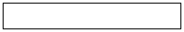
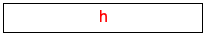

2 On Mice and Keys
Figure 3 displays another program that handles mouse events. Specifically, it is an interactive program that just records where the mouse events occur via small dots.It is acceptable to break the rule of separating data representations and image rendering for such experimental programs, whose sole purpose it is to determine how something works. It ignores what kind of mouse event occurs, and it also ignores the first guideline about the separation of state representation and its image. Instead the program uses images as the state of the world. Specifically, the state of the world is an image that contains red dots where a mouse event occurred. When another event is signaled, the clack function just paints another dot into the current state of the world.
; An AllMouseEvts is an element of Image. ; interpretation an image with markers for all mouse events ; graphical constants (define MT (empty-scene 100 100)) ; PositiveNumber -> Image ; records all mouse events for the specified time interval (define (main duration) (big-bang MT [to-draw show] [on-tick do-nothing 1 duration] [on-mouse clack])) ; AllMouseEvts Number Number String -> AllMouseEvts ; adds a dot at (x,y) to ws (check-expect (clack MT 10 20 "something mousy") (place-image (circle 1 "solid" "red") 10 20 MT)) (check-expect (clack (place-image (circle 1 "solid" "red") 1 2 MT) 3 3 "") (place-image (circle 1 "solid" "red") 3 3 (place-image (circle 1 "solid" "red") 1 2 MT))) (define (clack ws x y action) (place-image (circle 1 "solid" "red") x y ws)) ; AllMouseEvts -> AllMouseEvts ; reveals the current world state (because it is am image) (check-expect (show MT) MT) (define (show ws) ws) ; AllMouseEvts -> AllMouseEvts (define (do-nothing ws) ws)
Stop! Check the documentation to find out what an on-tick clause means when it specifies three distinct pieces. All you have seen so far are on-tick clauses that specify a clock-tick handling function.
(main 10)
Given that we moved the mouse continuously to produce the above image, the scattering of points reveals that an operating system does not track every single point where the mouse appears. Instead it samples mouse events sufficiently often and tells your program about those sample events. Usually these samples suffice for people’s purposes.
; distances in terms of pixels (define WIDTH 100) (define HEIGHT 30) ; graphical constant: (define MT (empty-scene WIDTH HEIGHT)) ; An AllKeys is a String. ; interpretation the keys pressed since big-bang created the canvas ; String -> AllKeys (define (main s) (big-bang s [on-key remember] [to-draw show])) ; AllKeys String -> AllKeys ; adds ke to ak, the state of the world (check-expect (remember "hello" " ") "hello ") (check-expect (remember "hello " "w") "hello w") (define (remember ak ke) (string-append ak ke)) ; AllKeys -> Image ; renders the string as a text and place it into MT (check-expect (show "hel") (overlay (text "hel" 11 "red") MT)) (check-expect (show "mark") (overlay (text "mark" 11 "red") MT)) (define (show ak) (overlay (text ak 11 "red") MT))
Figure 4 is the analogue to figure 3 for key events. The program starts with some basic constant definitions and a data definition that says we are using strings to record the key events we have seen so far. The main function specifies an event handler, namely one for keys. This key event handler, called remember, consumes the key events seen so far and a string that represents the last key pressed; it then appends the latter to the former. As with the previous program, the purpose of this one is to conduct experiments concerning key events.


Exercise 1. Look through the functions in the 2htdp/image library and find a way to create framed, left-aligned text. Then change the program in figure 4 so that it uses this combination of image primitives to render its state.
Exercise 2. Run the main function again, press some
regular keys on your keyboard, and then try the tab key or the
delete—